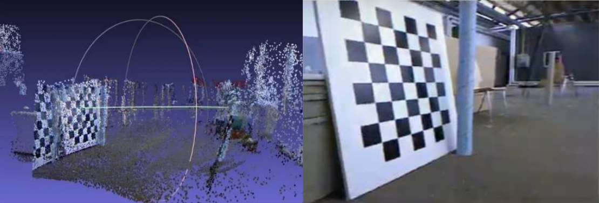

FEATURED RESEARCH

Real-Time Dense SLAM
Built a pipeline to capture RGB-D data from a stereo camera and feed it into a Gaussian Splatting training loop in real-time. Optimized for NVIDIA Jetson Orin Nano.
VIEW PROJECT →AREAS OF INTEREST
- Game Mechanics & Physics Engines (Unity/Godot)
- Embedded Vision & Edge Computing
- 3D Asset Pipeline & Digital Sculpting
- Network Automation